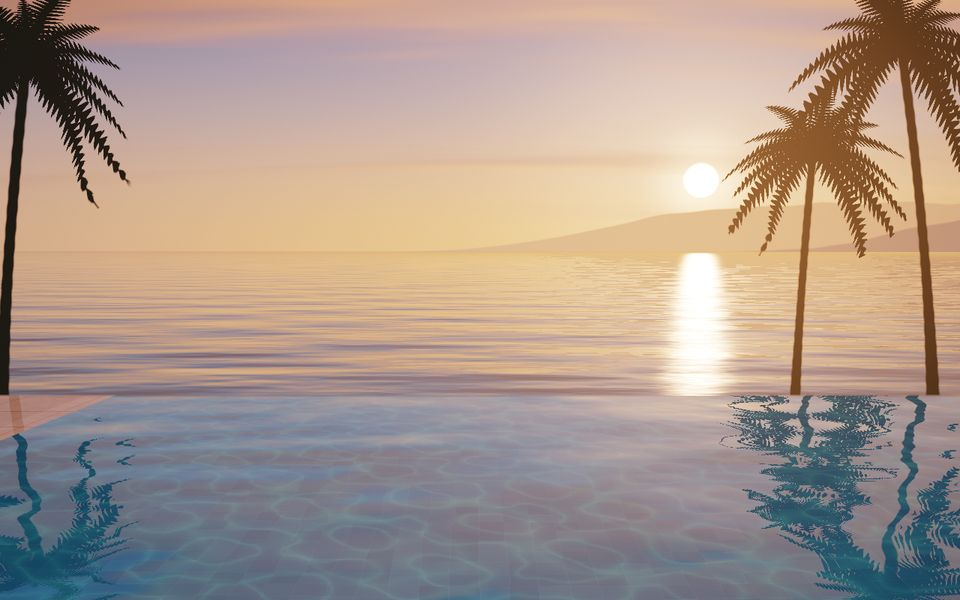
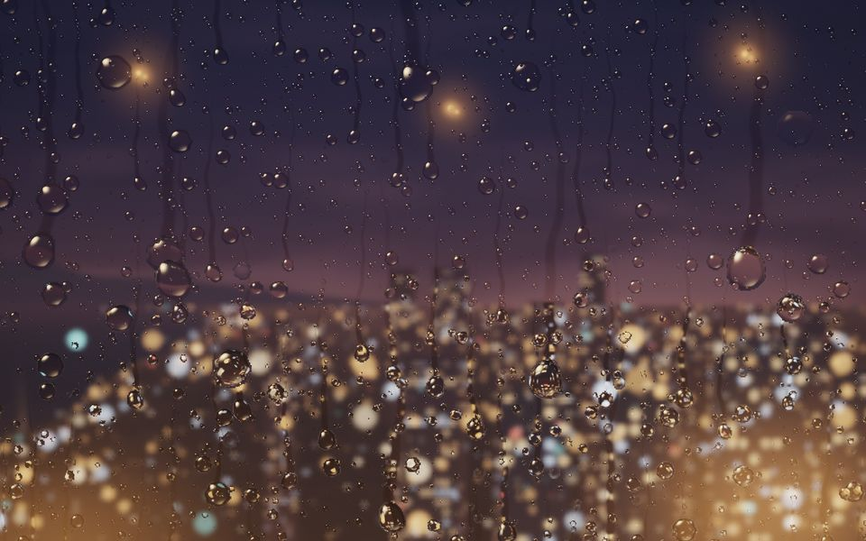
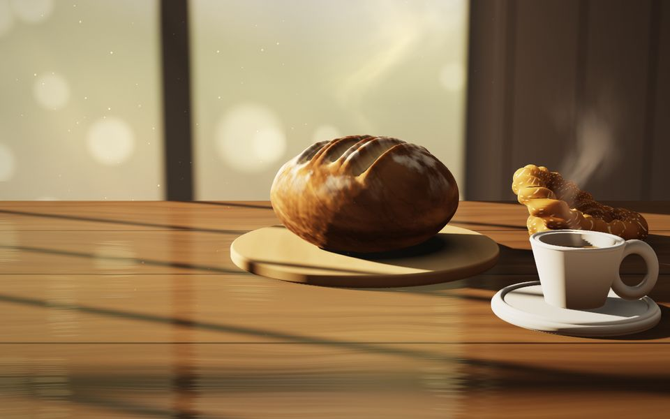

01 · Sahil oteliGün batımında sonsuzluk havuzu
Havuzun dibindeki karolar suyun altından kırılarak görünür, deniz güneşi yansıtır, palmiyeler rüzgârda oynar. Saat çubuğuyla gün batımından akşama geçer; havuz ışıkları yanar.
Sayfayı aç
02 · Rooftop barCama vuran yağmur, aşağıda şehir
Damlalar camdan süzülür, arkalarında iz bırakır; her damla şehri ters çevirip içinde gösterir. İçeriden sarkıt lambaların sıcak ışığı cama vurur.
Sayfayı aç
03 · Fırın & kafeSabah ışığında tezgâh
Ekşi maya somun, simit ve tüten kahve; pencere doğramasının gölgesi tezgâha düşer. Saat çubuğu şafaktan sabah güneşine götürür.
Sayfayı açİşletmeniz için ne anlama geliyor?
- 01Çekim gerekmez. Fotoğrafçı, drone, stok görsel yok. Sahne işletmenize göre sıfırdan yazılır: sizin havuzunuz, sizin manzaranız, sizin tezgâhınız.
- 02Video kadar ağır değil. Bir sahnenin tamamı yaklaşık 25 KB kod. Aynı görüntünün videosu bunun yüzlerce katı yer tutar ve mobil veride geç açılır.
- 03Telefonda akıcı. Çözünürlük cihaza göre kendini ayarlar, sayfa görünmüyorken durur, pil yemez. Eski cihazda sade bir renk geçişine düşer; sayfa yine çalışır.
- 04Canlıdır. Günün saatine, havaya, mevsime bağlanabilir: akşam giren ziyaretçi akşam ışığını görür.